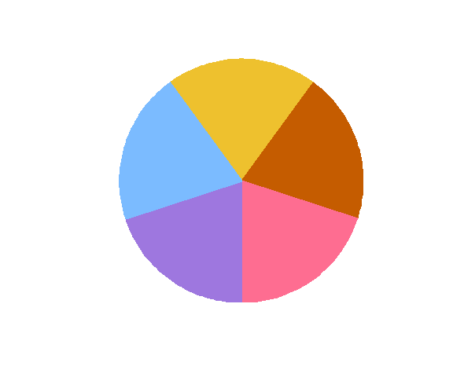
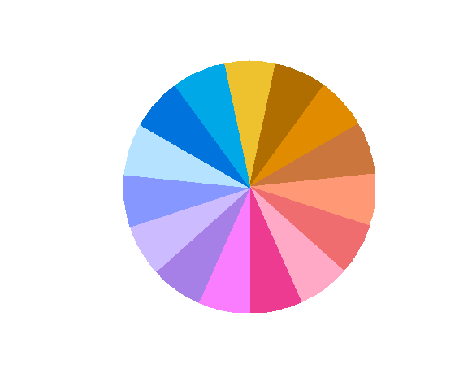
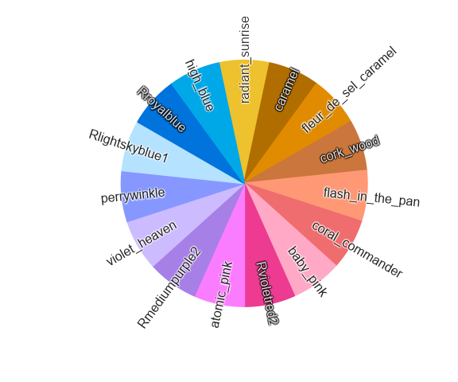
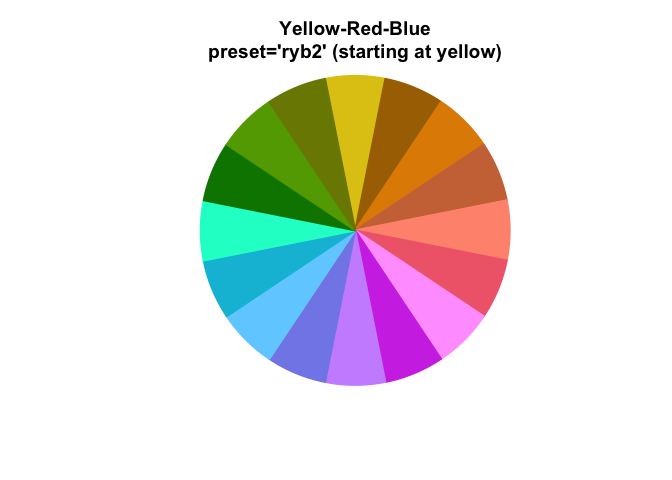
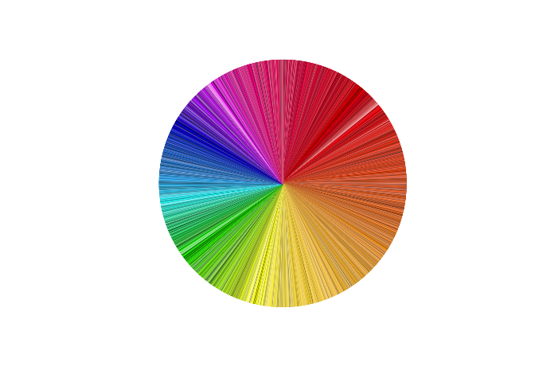
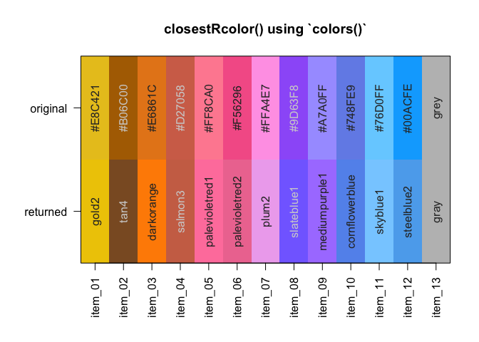

Why colorjam?
colorjam provides visually distinct categorical colors of arbitrary length, optimized for distinctive colors. It is similar in concept to rainbow() and colorspace::rainbow_hcl() except that those functions do not attempt to make colors distinctive.
Visually distinct.: Improved color contrast.
-
Scalable. Categorical colors of arbitrary length.
rainbowJam(n)- ggplot2 functions:
theme_jam(), orscale_color_jam(),scale_fill_jam()
Color-blindness friendly. Optimized color wheel across the three major types of color blindness.
Flexible. Custom color wheels:
"dichromat","ryb","rgb"Optimized for statistical design. Colors begin with gold for control group.
-
Helpful Utilities:
-
theme_jam()- ggplot2 theme which uses colorjam categorical colors. -
closestRcolor()- assign R color name -
closest_named_color()- assign very diverse color name -
group2colors()- assign colors to unique group terms -
add_colors()- add distinctive colors to existing categorical colors. -
color_complement()- complement colors with custom color wheel. -
col_div_xf()- divergent numeric-to-color function for heatmaps, bar charts, plots. Applies numeric max, and optional numeric floor. -
col_linear_xf()- linear numeric-to-color function for heatmaps, bar charts, plots. Applies numeric max, and optional numeric floor. -
sort_colors(),subset_colors()- sort or subset colors using numerous HCL, HSL, LUV color space properties.
-
Installation
Install colorjam using the remotes package:
remotes::install_github("jmw86069/colorjam");OR use pak:
### if necessary, install pacman:
# install.packages("pak")
pak::pkg_install("jmw86069/colorjam")colorjam is being prepared for CRAN.
Quick start with colorjam
For the examples below, two packages are loaded:
Categorical colors
dichromat (default)
Let’s generate n=5 categorical colors, displayed by jamba::showColors().
showColors(rainbowJam(5));
Alternatively, color_pie() displays colors in a pie circle.
color_pie(rainbowJam(5));
Categorical colors are scalable.
color_pie(rainbowJam(15));
Label the colors using the 4994 named_colors:
color_pie(rainbowJam(15, nameStyle="closest_named_color"));
Gradually increase the number of colors, then use color_pie() to plot them in concentric circles.
colorList <- lapply(nameVector(c(36, 24, 12)), function(n){
rainbowJam(n, nameStyle="n");
});
color_pie(colorList,
main="preset='dichromat2' (default)");
What is “dichromat” here?
Every color system has a “color wheel” - something like red-green-blue (RGB) or red-yellow-blue (RYB).
We defined a new color wheel "dichromat" to maximize the visual distinction between color hues for people with color blindness. The process was driven by R package dichromat, so we gave it that name out of respect.
The "dichromat" color wheel allocates approximately equal halves of the color wheel to be visually distinct for "deutan", "protan", and "tritan" forms of color blindness. Roughly akin to using “cool”/“warm” colors for each half the color wheel, for each simulated color. The wheel avoids colors which are the most difficult to distinguish in the color wheel.
It isn’t perfect.
However colorjam does provide the first scalable method (we have seen) to produce categorical colors optimized for the three major forms of color-blindness. Other excellent resources that provide color-blindness friendly colors, which are not scalable. However to be fair, fixed colors may be the best realistic approach, so colorjam may not be the ideal solution.
red-yellow-blue
The “full rainbow” color wheel “red-yellow-blue” is recommended over default RGB to provide the best full rainbow. It performs particularly well for color blending (see Color-blending) for additive paint-like mixing.
-
preset="ryb": red-yellow-blue
color_pie(rainbowJam(12, preset="ryb"),
main="Red-Yellow-Blue\npreset='ryb' (starting at red)");
-
preset="ryb2": yellow-red-blue
color_pie(rainbowJam(12, preset="ryb2"),
main="Yellow-Red-Blue\npreset='ryb2' (starting at yellow)");
red-green-blue
Similarly, the R default “red-green-blue” color wheel:
-
preset="rgb": R default RGB color wheel
color_pie(
rainbowJam(16, preset="rgb"),
main="Red-Green-Blue\npreset='rgb' (starting at red)");
*(Look how much of this color wheel is blue-green!)
-
preset="rgb2": R default RGB color wheel starting with yellow
color_pie(
rainbowJam(16, preset="rgb2"),
main="Red-Green-Blue\npreset='rgb2' (starting at yellow)");
More about color wheels
The 4994 colors provided in named_colors (see next section) are collated from numerous sources. These are 4,994 unique colors that people were motivated to name.
More than half the circle represents red/orange/yellow! Very little includes green, in contrast to the RGB color wheel above.
Here, named_colors are filtered for at least Chroma 40 using subset_colors(named_colors, C > 40)
color_pie(unname(
subset_colors(named_colors, C > 40)))
Clearly people can see many more red-orange-yellow, and comparatively very few green/blue colors. This bias is partly from lower sensitivity of colors such as “cyan”, and partly due to RGB color monitors being unable to produce high saturation colors with that hue. Color theory is fascinating, and endlessly complex, in part because each person is slightly different.
Color matching / Color naming
Two functions are provided to match colors to a reference set, which is a convenient way to assign color names.
-
- matches colors to the 657 colors in
grDevices::colors(), custom reference colors can be supplied.
- matches colors to the 657 colors in
-
- matches colors to 4883
named_colors, which adds 4447 colors from meodai/named-colors (amazing!) and 436 colors not already represented fromgrDevices::colors().
- matches colors to 4883
The argument showPalette=TRUE will plot the original colors and the closest matched color for comparison.
cnc <- closest_named_color(c(rainbowJam(12), "grey"),
showPalette=TRUE,
main="closest_named_color() using colorjam `named_colors`");
crc <- closestRcolor(c(rainbowJam(12), "grey"),
showPalette=TRUE,
main="closestRcolor() using R `colors()`");
Greyscale colors are matches separately to a subset of grayscale reference colors, to avoid using hue in unsaturated colors.
Color-blending
blend_colors() has some useful features:
- Paint-style blending. blue + yellow = green. (For default RGB: blue + yellow = grey)
- Scalable number of colors. Able to mix more than two colors.
- Transparency-aware. Accounts for color transparency during mixing.
The argument do_plot=TRUE will plot a visual summary of the mixing results.
blent1 <- blend_colors(c("red", "blue"), do_plot=TRUE);
blent2 <- blend_colors(c("gold", "blue"), do_plot=TRUE);
blent3 <- blend_colors(c("gold", "red"), do_plot=TRUE);
blent8 <- blend_colors(c("red1", "red3", "blue"), do_plot=TRUE);
blent9 <- blend_colors(c("red1", "blue1", "blue4"), do_plot=TRUE);
blent10 <- blend_colors(c("red", "blue", "ivory"), do_plot=TRUE);
Color-splitting
color2gradient() can split colors using a light-dark gradient.
colorSet <- rainbowJam(5);
colorSet4 <- color2gradient(colorSet, n=4);
color_pie(list(
colorSet4=unname(colorSet4),
colorSet=rep(colorSet, each=4)),
main="Color split into 4 additional subsets.");
The intensity of the gradient is adjusted with dex, “darkness expansion factor”.
colorSet <- rainbowJam(5);
colorSet4a <- color2gradient(colorSet,
n=4,
dex=1/2);
colorSet4c <- color2gradient(colorSet,
n=4,
dex=3);
colorSet4b <- color2gradient(colorSet,
n=4,
dex=10);
colorSet <- rep(colorSet, each=4)
names(colorSet4c) <- names(colorSet4b) <- names(colorSet4a) <- names(colorSet4) <- "";
names(colorSet4b)[5:8] <- c(" 10", " |", " |", " v")
names(colorSet4c)[5:8] <- c(" 3", " |", " |", " v")
names(colorSet4)[5:8] <- c(" 1", " |", " |", " v")
names(colorSet4a)[5:8] <- c("1/2", " |", " |", " v")
color_pie(list(
`dex=10`=(colorSet4b),
`dex=3`=(colorSet4c),
`dex=1\n(default)`=(colorSet4),
`dex=1/2`=(colorSet4a),
colorSet=colorSet),
main=paste0("Intensity of the gradient is adjusted with 'dex'\n",
"(darkness expansion factor)"));
ggplot2 functions
-
theme_jam()uses colorjam categorical colors by default. -
scale_color_jam()categorical colors for ggplot2colour -
scale_fill_jam()categorical colors for ggplot2fill
if (suppressPackageStartupMessages(require(ggplot2))) {
dsamp <- ggplot2::diamonds[sample(nrow(ggplot2::diamonds), 1000),];
dsamp$cut <- as.character(dsamp$cut);
d <- ggplot2::ggplot(dsamp, ggplot2::aes(carat, price)) +
ggplot2::geom_point(ggplot2::aes(colour=cut, fill=cut),
size=4,
shape=21);
d +
theme_jam() +
ggplot2::ggtitle("theme_jam()");
}
Features with color and fill can be enhanced using theme_jam(darken_colour=TRUE) to add a subtle darker border:
if (suppressPackageStartupMessages(require(ggplot2))) {
d +
theme_jam(darken_colour=TRUE)
ggplot2::ggtitle("Adjustment with 'darken_colour=TRUE'");
}
#> <ggplot2::labels> List of 1
#> $ title: chr "Adjustment with 'darken_colour=TRUE'"theme_jam() provides some convenient arguments to customize:
-
base_size:numericdefault font size in points. -
blankGrid:logicalto remove all background grid lines.
Shown below are some customizations, including grey background, in order to make the ggplot2 grey background more Jam-like.
if (suppressPackageStartupMessages(require(ggplot2))) {
d +
ggplot2::ggtitle("theme_jam()") +
theme_jam(darken_colour=TRUE,
panel.grid.major.colour="white",
panel.grid.minor.colour="white",
panel.background=ggplot2::element_rect(fill="#EEEEEE"),
base_size=24)
}